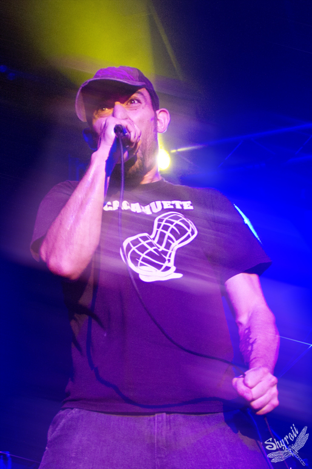

Toundra en Albacete. Después de su extensa gira por Europa y el resto de España, que también les llevará a estar presentes en multitud de festivales, este concierto podría parecer uno más, y más si estáis leyendo la crónica desde grandes capitales.
{kind=link}
La situación de la música en directo en Albacete está repuntando gracias al esfuerzo de personas y colectivos que mueven cielo y tierra para poder traer conciertos dignos. Se me escapan muchos de los factores que han hecho que durante unos años hayamos vivido en un (más si cabe) páramo cultural en cuanto a directos se refiere, donde se multaban a salas de conciertos mientras se promovían escuelas taurinas. Como digo, seguramente no tenga la autoridad para analizar la situación y tenemos que agradecer que últimamente la programación de conciertos en Albacete vuelve a tener más oxígeno. «El evento del año» se oía en la puerta de la sala Clandestino, y no es para menos.
Lo vivido el viernes 12 de junio fue un reflejo de lo que hace más especiales a Toundra, más allá de su música, y es su capacidad de convocatoria, la que hace que la semana anterior estuvieran tocando en un cartel con lo más granado del indie nacional y sólo unos días después acompañados de grupos de hardcore pasado de vueltas.
Pero vayamos a la música.
Toundra contaban con los conciertos de los grupos locales Recombine, Niño Padre y Retraso como apoyo.

Recombine cumplieron de sobra la complicada labor de abrir a una hora tan temprana el espectáculo con su metal instrumental. Basados en un repertorio donde premiaba el virtuosismo y más orientado al metal progresivo de unos Animals as Leaders, brillaron más en las canciones que jugaron con ambientes y texturas.

Los dos siguientes conciertos son ya viejos conocidos en la escena hardcore de Albacete y alrededores. Niño Padre son unas de las propuestas más interesantes a nivel local y contaron con un directo arrollador. Sonando a todo lo que puede haber entre medias de Eyehategod y Trap Them, dejaron caer un hardcore lento y oscuro, algún que otro sinte y zapatilla en dosis muy acertadas. Nivelazo el de esta gente.

Retraso, de los que ya os hablamos en un especial de bandas recomendadas, ofrecieron lo que su creciente legión de fans esperaba: zurre, hardcore corto y gorrino, cercano al crust más bestia. Aunque sólo pudimos ver la recta final del concierto, el sudor y la velocidad pusieron el broche a la actuación de un grupo que aunque a priori puede parecer que no encajaba en el cartel demostró de sobra por qué se ven tantas de sus camisetas por la ciudad.
{kind=link}
{kind=link}
{kind=link}
Comenzó a sonar Fearless de Pink Floyd, y el You’ll Never Walk Alone que cantan los aficionados del Liverpool al final de la canción se empezó a mezclar con el sonido de pájaros cantando. Era el turno de Toundra. Con una aforo casi completo se confirmó el estado casi de comunión que suponía el concierto: allí había heavies, indies, hardcoretas, gente muy joven y padres con hijos…
{kind=link}
Efectivamente Strelka, del último trabajo de los madrileños, fue el tema encargado de abrir el concierto y crear el ambiente necesario para disfrutar el concierto. Marte fue la siguiente y demostró que los temas del III funcionan a la perfección en directo y fueron de los más aclamados, como así ocurrió con los pertenecientes al segundo disco de la banda. Belenos actuó como la calma tensa antes de la tormenta que supusieron Ara Caeli y Cielo Negro.

Toundra realizó un concierto en crudo, sin el acompañamiento instrumental de la presentación de su cuarto disco, cosa que pudo quitar matices a las canciones pero sin duda el conjunto ganó en contundencia. Puede que ya suene a tópico pero ver a una banda tan inspirada y conectada sobre el escenario ayuda a que los que estemos abajo disfrutemos más de la experiencia.
Medusa fue la única referencia a su primer disco (un acierto no utilzarla para cerrar el concierto) y Oro Rojo la canción de IV que mejor caló entre el público. Con un ambiente ideal y un público que respondía a cada invitación que se le hacía desde el escenario, el concierto acabó con Bizancio, que ya cerraría el segundo disco de Toundra en 2010.
A más de uno se le hizo corto, y ya con los últimos aplausos entraban las dudas «¿el evento del año?» Quién sabe, aún quedan meses para que acabe 2015, pero lo que sí que es seguro es que la ciudad necesita más conciertos como el que dio Toundra el 12 de junio.
(Las fotografías de esta entrada están realizadas por Iris Shyroii, podéis conocer más a fondo su trabajo en su página de Facebook y de Flickr. ¡Muchas gracias Iris!)
Apoyános